COVID-19 Data Analysis Project
1. Project Overview
This project analyzes global COVID-19 data using Python.
It explores reported cases, deaths, testing, vaccination progress,
and country-level differences through data analysis and visualization.
The project also focuses on Bangladesh to examine its COVID-19
case trends, death trends, and vaccination progress.
2. Project Objectives
- Analyze global COVID-19 cases and deaths over time.
- Identify countries with high reported case and death counts.
- Explore Bangladesh's COVID-19 situation.
- Analyze vaccination progress in Bangladesh and other countries.
- Calculate and compare Case Fatality Rates (CFR).
- Examine relationships between selected COVID-19 indicators.
- Present findings through statistical summaries and visualizations.
3. Dataset Description
The dataset was obtained from the Our World in Data COVID-19
compact dataset.
| Dataset Information |
Value |
| Total records after preprocessing |
629,868 |
| Total columns after preprocessing |
60 |
| Unique countries/entities |
262 |
| First available date |
2020-01-01 |
| Last available date |
2026-10-18 |
The dataset includes information about reported COVID-19 cases,
deaths, testing, hospitalizations, vaccinations, population,
and selected demographic indicators.
4. Tools and Technologies
- Python
- NumPy
- Pandas
- Matplotlib
- Seaborn
- Jupyter Notebook
5. Data Preprocessing
The preprocessing workflow included:
- Loading the COVID-19 CSV dataset.
- Inspecting dataset dimensions, data types, and missing values.
- Removing completely empty columns.
- Checking missing country and date values.
- Inspecting duplicate country-date records.
- Sorting records chronologically.
- Reviewing negative daily case and death values.
- Creating derived date and statistical features.
Missing values were not universally replaced with zero because
a missing observation does not necessarily mean zero reported cases.
6. Exploratory Data Analysis
The exploratory analysis examined:
- Dataset structure and descriptive statistics.
- Country-level cumulative cases and deaths.
- Global daily and monthly case trends.
- Global daily death trends.
- Bangladesh's daily and monthly case trends.
- Bangladesh's reported death trends.
- Bangladesh's vaccination progress.
- Relationships between selected numerical indicators.
7. Feature Engineering
The analysis included derived indicators such as:
- Case Fatality Rate (CFR).
- Year, month number, and month name.
- Cases excluding reported deaths.
Cases excluding reported deaths should not be interpreted as
actual active cases or recovered cases.
8. Statistical Analysis
The statistical analysis included:
- Mean, median, standard deviation, minimum, and maximum.
- Country-level cumulative case and death comparisons.
- Case Fatality Rate calculations.
- Cases and deaths per million people.
- Full vaccination coverage comparisons.
- Pearson correlation analysis.
- Spearman rank correlation analysis.
9. Key Findings
The project findings are generated from the processed dataset
and are documented in the accompanying CSV reports.
See the following files in the reports directory:
- global_covid_findings.csv
- top_10_cases_findings.csv
- top_10_deaths_findings.csv
- correlation_findings.csv
- bangladesh_vaccination_findings.csv
- cfr_findings.csv
10. Visualizations
The following charts illustrate the major trends and comparisons
identified during the COVID-19 data analysis.
Bangladesh Cases Trend
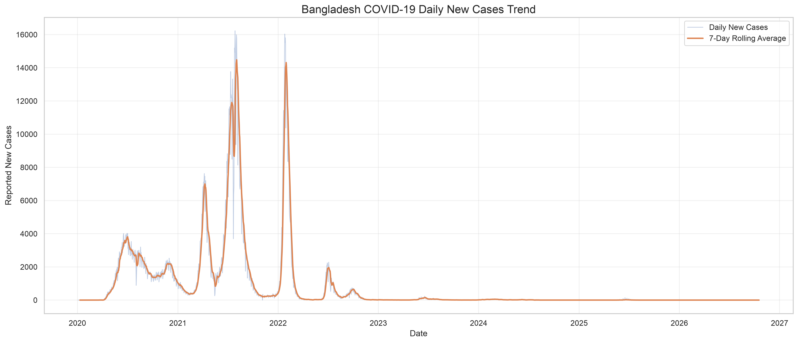
Bangladesh Monthly Cases
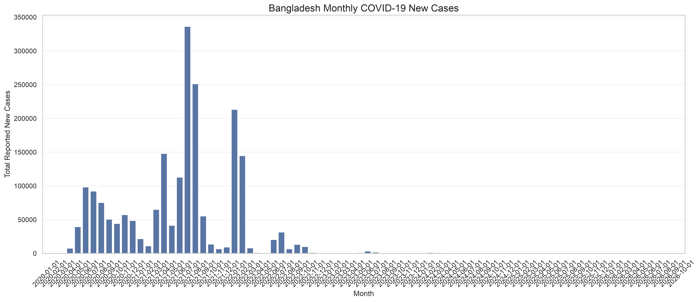
Bangladesh Vaccination Progress
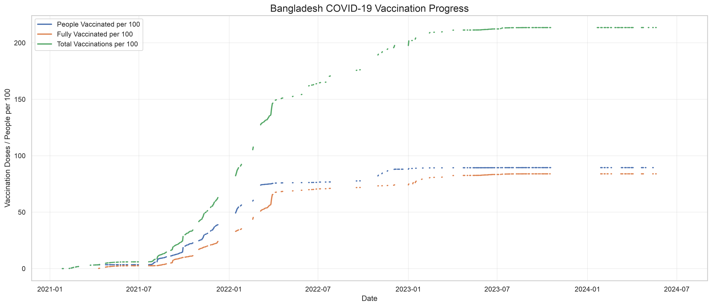
Bangladesh Vaccination Statistics
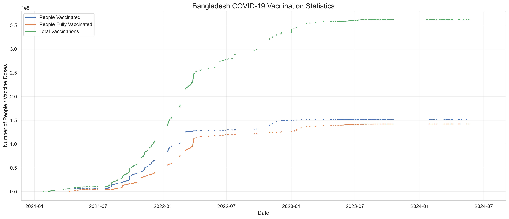
Cases Vs Deaths Relationship
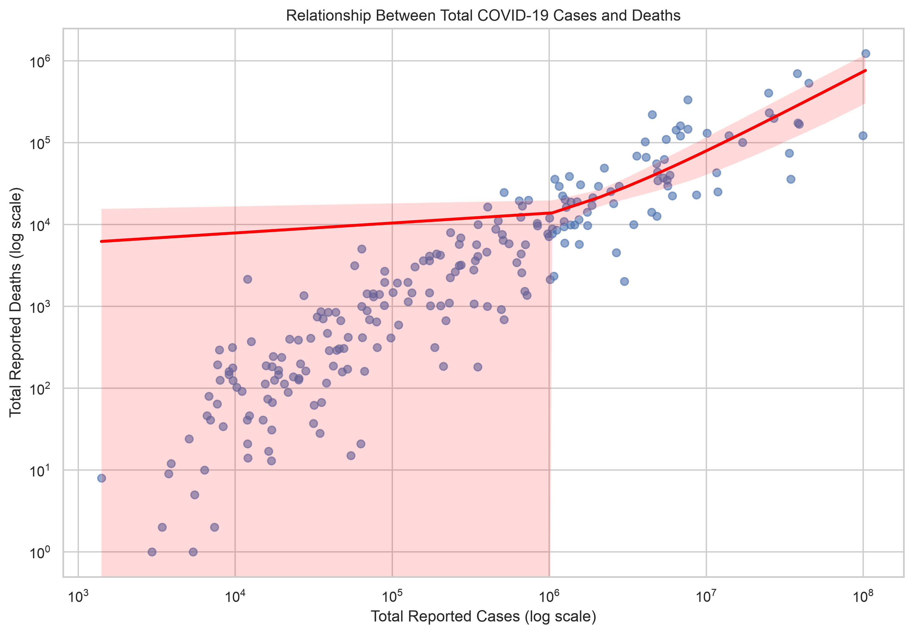
Covid Correlation Heatmap
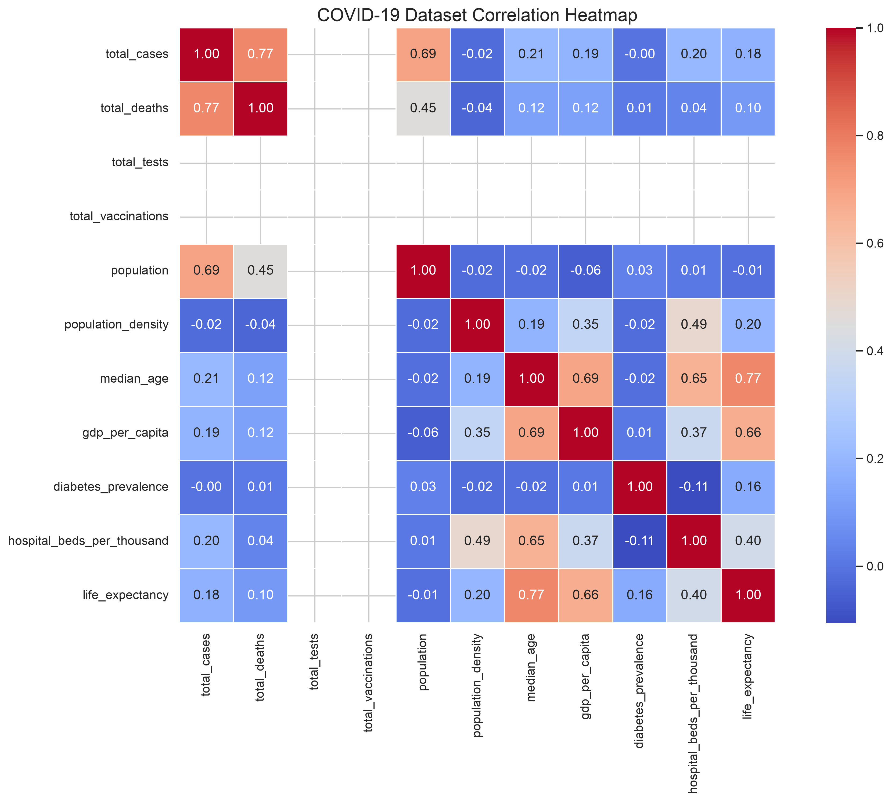
Global Cases Trend
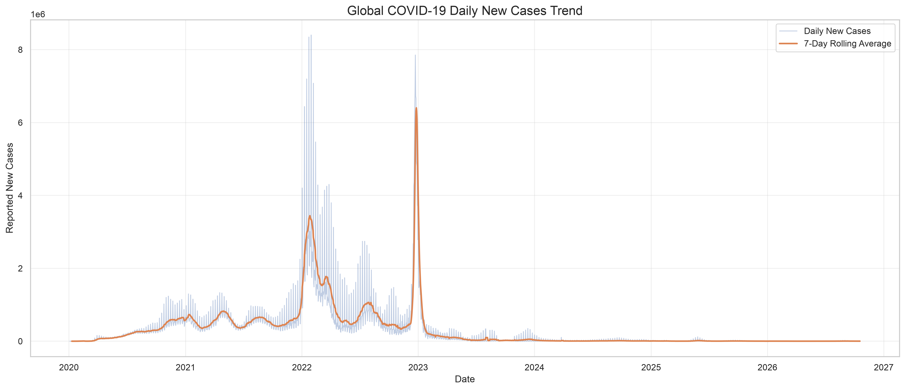
Global Deaths Trend
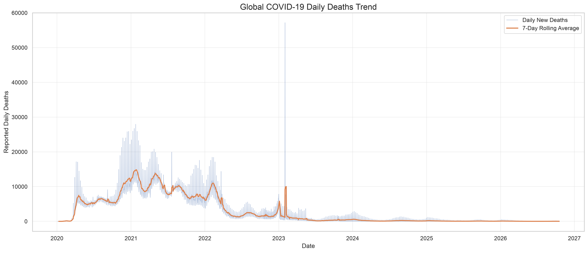
Pearson Correlation Heatmap
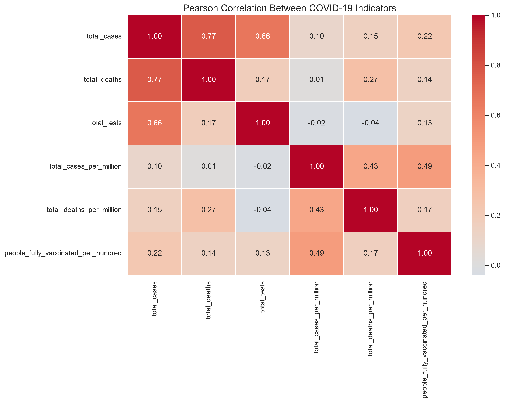
Testing Vs Cases Relationship
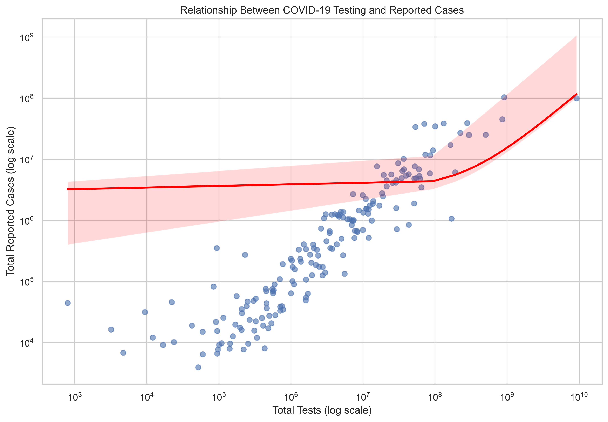
Top 10 Countries Cases
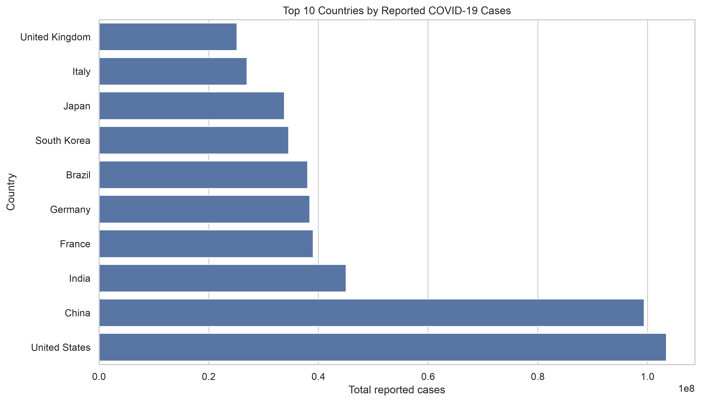
Top 10 Countries Cfr
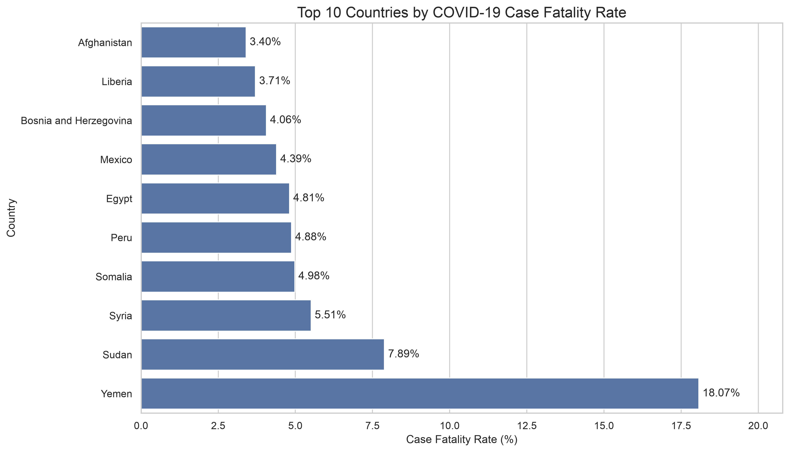
Top 10 Countries Deaths
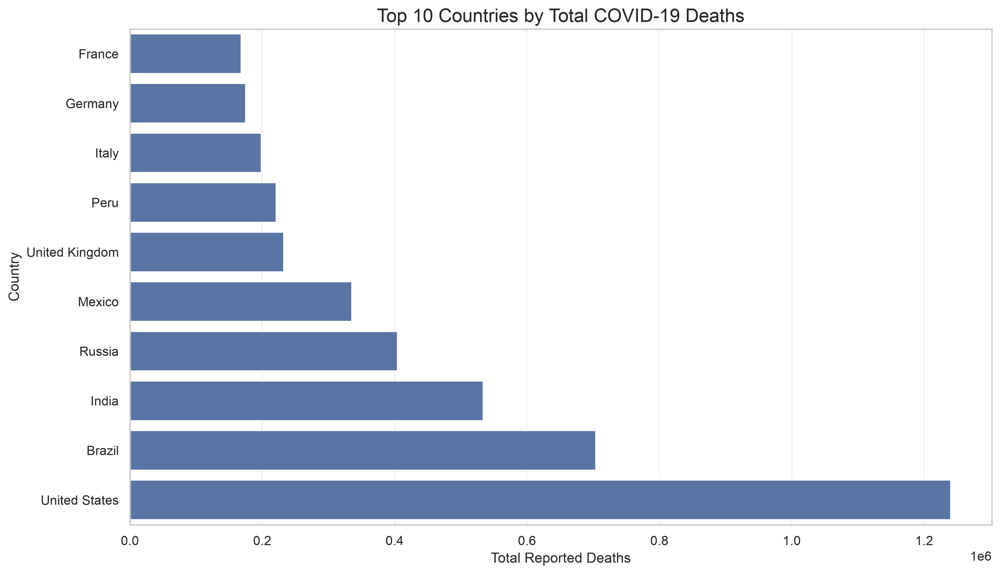
Top 10 Countries Deaths Labeled
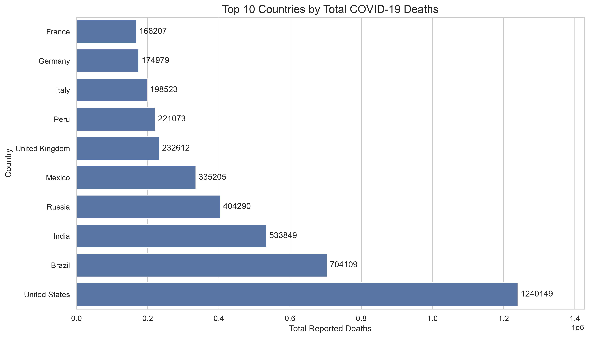
Top 10 Deaths Per Million
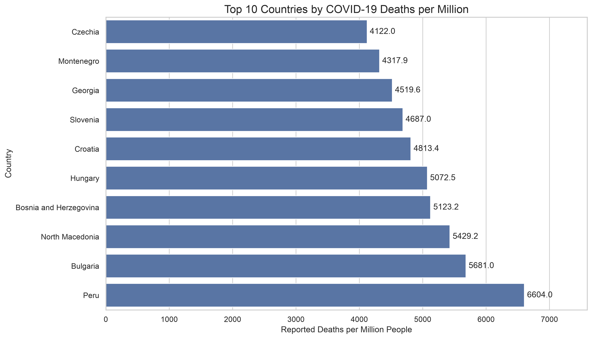
Top 10 Vaccination Coverage
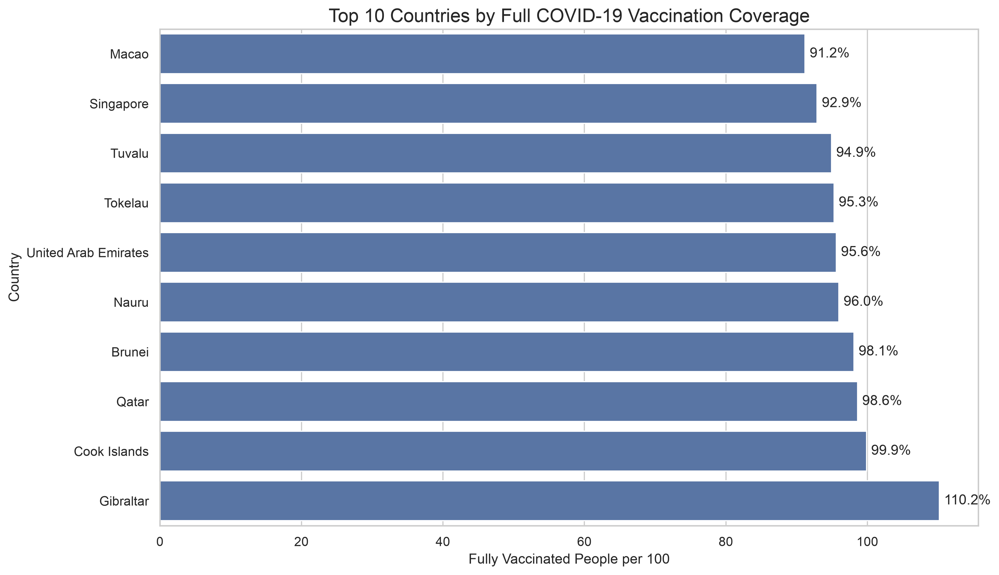
Vaccination Vs Deaths Relationship
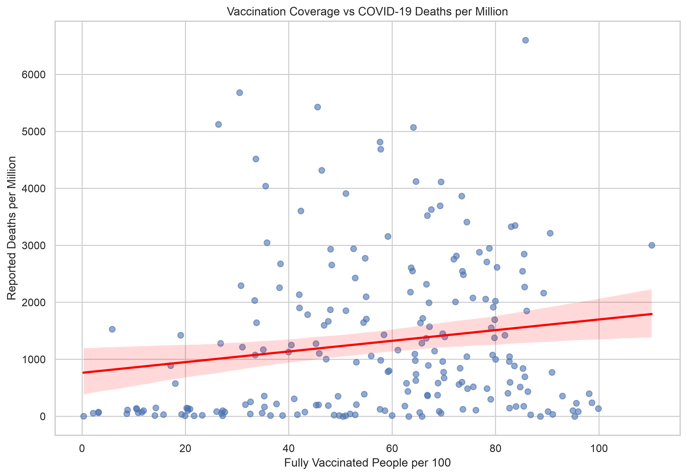
11. Limitations
- Reported cases and deaths depend on testing and reporting practices.
- Missing values can affect country-level comparisons.
- Countries may have different latest available observation dates.
- Cumulative totals should not be interpreted as daily counts.
- Negative daily values may reflect retrospective reporting corrections.
- Correlation does not establish causation.
- Country-level vaccination and death comparisons do not prove vaccine effectiveness.
- Per-million indicators help account for population size but do not remove
differences in demographics, healthcare systems, or reporting quality.
12. Conclusion
This project demonstrates how Python data analysis tools can be used
to process, explore, visualize, and statistically analyze a large
real-world public health dataset.
The analysis provides an overview of global COVID-19 trends and
a focused examination of Bangladesh. It also demonstrates the
importance of data quality, appropriate statistical interpretation,
and clear visual communication.
Project: COVID-19 Data Analysis
Dataset: Our World in Data COVID-19 Compact Dataset
Environment: Python and Jupyter Notebook